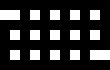
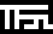
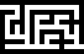
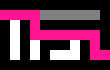
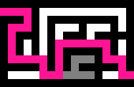

Dimensions of the mazes were determined by fibinnaci numbers. Maze 0 was the 0th fibinnaci number (1) by the 1st fibinnaci number (1), maze 1 being the 1st fibinnaci number by the 2nd (1 by 2), maze 2 being the 2nd by the 3rd (2 by 3) and so on. Mazes were inintially a grid, as shown below.
Maze 2
 Maze 3
Maze 4
Mazes were not allowed to have cycles, meaning there could only be one path from any two points within the maze. To convert the grids into actual mazes, either Prim's algorithm or recursive backtracking were used.
Maze 2
 Maze 3
 Maze 4
Below is a video demonstration of Prim's Algorithm for generating mazes implemented in JAVA. The blue cells are cells currently in the list of possible cells to look at and the pink cell is the one currently being looked at.
Because the fibonnaci sequence exhibits exponetial growth, the largest maze my computer could generate was maze 21, which is 17711 cells by 28657 cells.
Maze Solving
Once the mazes were generated they were solved using recursive backtracking.
Because these mazes grow to massive sizes, the recursive backtracking algorithms used in maze generation and maze solving used a stack data structure instead of recursion to aviod reaching max recursive depth.
Maze 2 Solved
 Maze 3 Solved
 Maze 4 Solved
Below is a video demonstration of the maze generated in the previous video using
Recursive Backtracking. The grey cells are visited cells that resulted in a dead end, while the pink cells show the current solution's path.